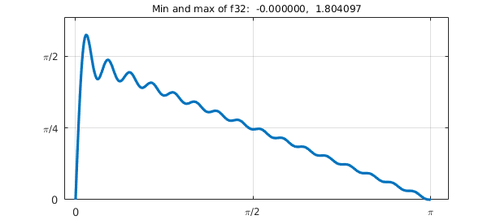
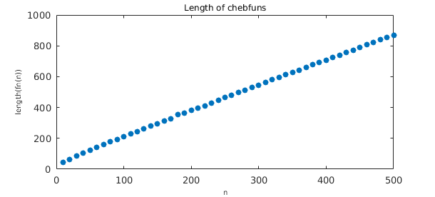
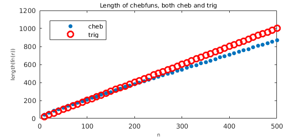

The Fejer-jackson inequality concerns the sums $$ f_n(t) = \sum_{k=1}^n {\sin(k t)\over k}, \quad x \in (0,\pi) . $$ In Chebfun, we can compute $f_n$ like this:
fnx = @(n,x) sum(sin((n:-1:1)*x)./(n:-1:1)); fn = @(n) chebfun(@(x) fnx(n,x),[0 pi],'vectorize');
Here for example is the case $n=32$:
XT = 'xtick'; XL = 'xticklabel'; YT = 'ytick';
YL = 'yticklabel'; FS = 'fontsize'; LW = 'linewidth';
MS = 'markersize'; ax = [-.1 3.3 0 2];
f32 = fn(32); plot(f32,LW,1.6), axis(ax), grid on
set(gca,XT,pi*(0:.5:1),XL,{'0','\pi/2','\pi'})
set(gca,YT,pi*(0:.25:.5),YL,{'0','\pi/4','\pi/2'})
ss = 'Min and max of f%d: %9.6f, %9.6f';
title(sprintf(ss,32,minandmax(f32)),FS,12)

Here is $n=128$.
f128 = fn(128); plot(f128,LW,1), axis(ax), grid on
set(gca,XT,pi*(0:.5:1),XL,{'0','\pi/2','\pi'})
set(gca,YT,pi*(0:.25:.5),YL,{'0','\pi/4','\pi/2'})
title(sprintf(ss,128,minandmax(f128)),FS,12)
And here is $n=512$, now with the plot showing just a closeup near $x=0$.
f512 = fn(512); plot(f512{0,0.2},LW,1), axis([0 .2 0 2]), grid on
set(gca,YT,pi*(0:.25:.5),YL,{'0','\pi/4','\pi/2'})
title(sprintf(ss,512,minandmax(f512)),FS,12)
The oscillations don't go away: this is the Gibbs phenomenon.
The Fejer-Jackson inequality asserts that for every $n\ge 1$, $f_n(x) > 0$ for all $x\in (0,\pi)$. This was conjectured by Fejer in 1910 and subsequently proved by various people including Jackson, Gronwall, Landau, Turan, and Fejer himself. I learned of the matter this past April from Dick Askey, who has been interested in sharpenings of the inequality.
It is interesting to look at this function from the Chebfun point of view. The functions above construct $f_n$ as an algebraic polynomial, nonperiodic, represented by Chebyshev coefficients. Here is a plot of length as a function of $n$, showing a linear relationship with a proportionality constant of $\pi/2$.
nn = 10:10:500; ln = [];
for n = nn
ln = [ln length(fn(n))];
end
plot(nn,ln,'.',MS,14)
title('Length of chebfuns',FS,12)
xlabel('n',FS,10), ylabel('length(fn(n))',FS,10)

Since these are trigonometric functions, an alternative would be to construct them as trig chebfuns, though now the domain would have to be $[0, 2\pi]$. This is slightly less efficient as now the proportionality constant is $2$:
fntrig = @(n) chebfun(@(x) fnx(n,x),[0 2*pi],'trig','vectorize');
lntrig = [];
for n = nn
lntrig = [lntrig length(fntrig(n))];
end
hold on, plot(nn,lntrig,'or',MS,6), hold off
title('Length of chebfuns, both cheb and trig',FS,12)
xlabel('n',FS,10), ylabel('length(fn(n))',FS,10)
legend('cheb','trig','location','northwest')

Of course, algebraically the trigonometric approximations are exactly the partial sums in the definition of $f_n$, and they could be constructed that way explicitly rather than using the general trigfun constructor as above.